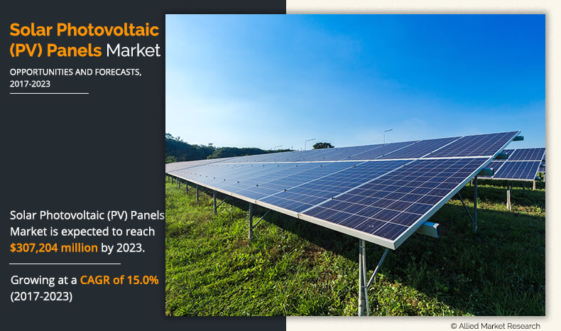
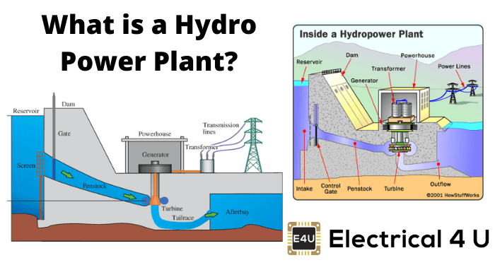
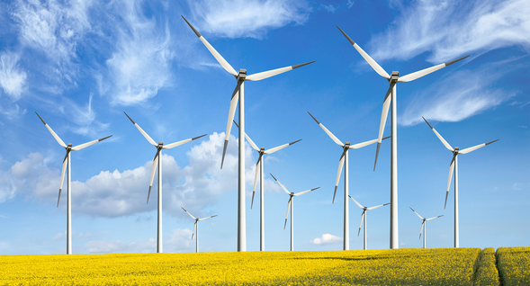
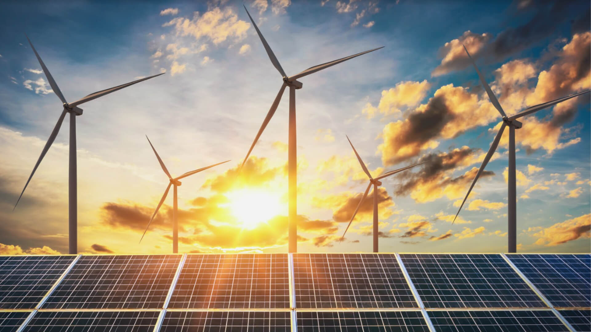

Types of Green Energy
1. SOLAR ENERGY
Sun is a huge source of solar energy which provides energy to all the living creatures on earth. It is renewable and clean source which produce almost about 10,000 times more energy than earth can produce in 21st century. We can use this solar energy as green energy as it is the most suitable renewable energy source which is giving us energy directly and indirectly such as hydro, wind, etc. and having the least impact on the environment as it not taking part in increasing the carbon dioxide and does not lead to global warming in any way.
It can be converted into useful energy directly using various technologies grouped under two fundamental categories:
Solar Photovoltaic (PV):
Solar energy is directly converted into electricity by using photovoltaic cells. This technology is relatively new, as the solar cell was only first successfully developed in 1975.

2. HYDRO ENERGY
Hydro energy is considered renewable because the energy from the sun powers the global hydrologic cycle. It is a power which is derived from water cycle, a continuous process of falling and fast running water to generate electricity.
Hydroelectric power is an established form of renewable energy that already provides a major source of electricity, approximately 19% of the world’s electricity [5]. The majority of hydroelectric power harnessed in the world today is produced from large-scale schemes.
In addition, there is further scope for development of small�scale hydroelectric projects since:
1. Large scale schemes can produce hundreds of mega watts and also involve construction of large dams to provide a sufficient head to the turbine;
2. Small scale schemes have less capacity and so have small dams and less impact on environment;
3. Micro scale schemes produces power in kilowatt and are used in small villages and individual houses.

3. WIND ENERGY
The energy which is generated by the flow of wind using wind turbines is called wind energy. It is a renewable source of energy which can be use as an alternative to fossil fuels. Wind energy is a clean energy which does not create pollution or releasing any harmful gases i.e. greenhouse gases. That’s why it is considered as one of the source of green energy. Wind is actually a form of solar energy; winds are caused by the heating of atmosphere by the sun, the rotation of the earth and the earth’s surface irregularities. Wind turbines are usually installed in large land farms. Wind power capacity increases to 369.553 MW by Dec. 2014 and rapidly growing the total wind energy production, reached around 4% of total electricity usage [6]. Generally all the large wind turbines have same structure consist of a horizontal axis wind turbine having upwind rotor with three blades. In a wind farm, each turbine is interconnected with a medium voltage power collection system and communication network. Today in wind turbines we use the combination of variable speed generators and partial or full scale power converter between the turbine generator and the collector system. A wind turbine is a device that converts kinetic energy from the wind into electrical power.

